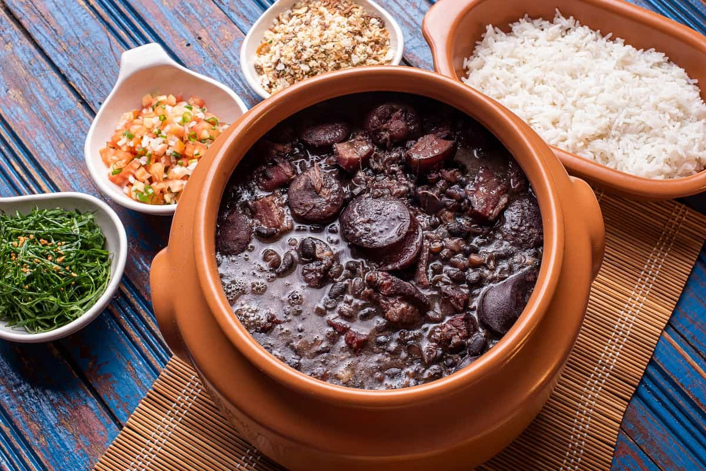

Feijoada brasilena

Description
This is a brasilian traditional dish. It is a preparation based on beans, meat, sausages and vegetables.
Ingredients
For four people
- 500 gr of beans, kidney beans or black beans
- 100 gr of sausage
- 150 gr of pork loin
- 100 gr of bacon or pancetta
- 100 gr of pork chop
- 1 onion
- 1 paprika
- 1 clove of garlic
- 1 tbsp of salt
- 1 tbsp pepper
- 1 bay leaf
- 2 tablespoons of oil
- water
Steps
- One day to prepare the Brazilian feijoada, you must soak the beans in enough water, for approximately 12 hours.
- We will take the chorizo, the bacon, the pork loin and the chop to cut them into small pieces. We preheat a frying pan with oil and we are going to fry the meat, so that it is like a seal, since it will be cooked again. We booked.
- Cut the vegetables into brunua or small squares and we will proceed to fry over low heat for 5 minutes, until they take on a transparent color. We will reserve.
- Strain the beans and remove the water where they are soaked, place them in a pot with enough water, cover them and boil for 20 minutes.
- After this time, we will add the meat, salt, pepper and bay leaf, let it cook for 30 minutes over low heat. You should always stir so that the bottom of our feijoada does not stick.
- At the end of that period, we will add the fried vegetables, cover it and leave it for 40 minutes to finish cooking. The beans should be tender and creamy. Remember that during this time, you must also stir so that they do not stick to the pot and do not burn. You must be attentive at all times.
- We are done, you will be ready to delight yourself with this Brazilian feijoada!